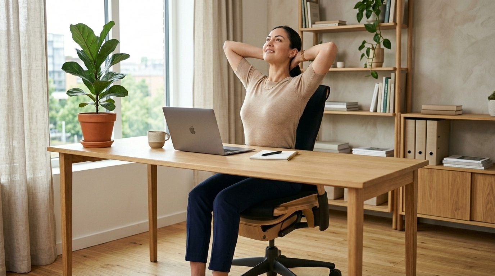
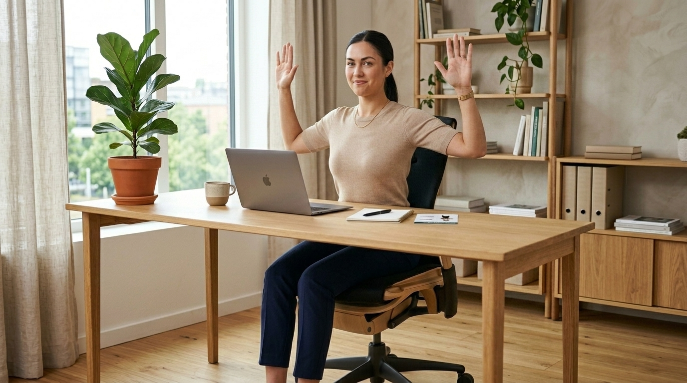
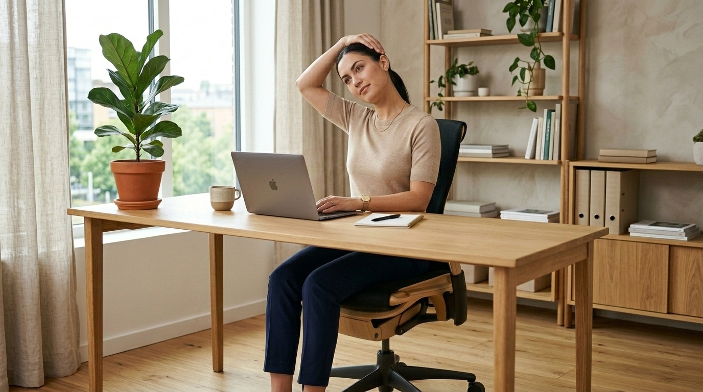

거북목은 단순한 외형의 문제가 아닙니다. 등이 둥글게 굽으면서(흉추 후만) 머리가 앞으로 빠져나가면, 머리의 무게 중심을 지탱하기 위해 목 뒤쪽의 상부 승모근과 후두하근(Suboccipital muscles)이 24시간 내내 과도하게 긴장 수축하게 됩니다.
이 굳어진 후두하근이 두피로 올라가는 대후두 신경과 혈관을 압박하면서 오후만 되면 뒷골이 당기고 관자놀이가 지끈거리는 '경추성 두통(Cervicogenic Headache)'과 안구 건조증, 만성 어깨 결림이 발생합니다. 따라서 통증을 없애려면 목만 뒤로 젖히는 것이 아니라 '턱을 당겨 경추 심부 근육을 강화하고 흉추를 펴주는 복합 교정'이 반드시 선행되어야 합니다.
2. 사무실 의자에서 끝내는 4대 교정 스트레칭
별도의 운동복이나 도구 없이, 일하는 도중 의자에 앉아 조용히 따라 할 수 있는 4가지 핵심 교정 루틴입니다.
2) 흉추 신전 스트레칭 동작 가이드
준비 자세
양손을 깍지 껴 뒤통수에 대고, 등받이에 등 중간을 기댑니다.
수행 동작
숨을 들이마시며 가슴을 천장 쪽으로 활짝 열고 5초간 늘려줍니다. (8회 반복)
기대 효과
흉추 가동성 회복: 굳어있던 흉추 뼈마디를 펴주어 목과 허리로 가는 압력을 분산시킵니다.

의자 등받이를 지지축으로 가슴을 천장으로 활짝 열어 굽은 등을 펴주는 흉추 신전 스트레칭
3) 어깨 W 레이즈 (W-Raise) - 날개뼈 조여 라운드숄더 펴기
자세
상체를 바르게 세우고 팔꿈치를 90도로 굽혀 몸통 옆에 붙입니다.
동작
양손을 바깥쪽으로 벌리며 팔 모양이 알파벳 'W'가 되도록 만들고, 날개뼈(견갑골) 사이를 강하게 모아 3초간 조입니다.
효과
약해진 중·하부 승모근과 능형근을 깨워 안으로 말린 어깨를 뒤로 열어줍니다. (12회 반복)

양팔을 W 모양으로 만들어 날개뼈를 모아주며 말린 어깨를 활짝 펴는 W 레이즈 동작
4) 상부 승모근 이완 (Trapezius Stretch) - 만성 어깨 결림 즉시 해소
자세
오른손으로 의자 옆면을 잡고 상체를 고정합니다.
동작
왼손을 머리 위로 넘겨 오른쪽 귀 위를 감싸고, 숨을 내쉬며 머리를 왼쪽 어깨 방향으로 부드럽게 기울여 15초간 늘려줍니다.
효과
솟아오르고 뭉친 상부 승모근과 견갑거근의 긴장을 즉각 완화합니다. (좌우 교대 3세트)

뭉치고 긴장된 목 옆선과 승모근을 지그시 이완하여 어깨 결림을 해소하는 스트레칭
3. 근무 중 50분 집중 · 5분 리셋 시간표
한 번 굳어진 자세는 시간이 지날수록 피로도를 급격히 가중시킵니다. 스마트워치나 타이머를 활용한 **'50-5 리셋 루틴'**입니다.
⏱ 사무실 5분 리셋 타임테이블
00:00 ~ 01:00 (1분)
양손 깍지 끼고 기지개 켜기 & 어깨 으쓱 5회
01:00 ~ 02:00 (1분)
턱 당기기(Chin Tuck) 10회 집중 수행
02:00 ~ 03:00 (1분)
의자 등받이 이용한 흉추 신전 스트레칭 5회
03:00 ~ 04:00 (1분)
어깨 W 레이즈로 견갑골 조이기 12회
04:00 ~ 05:00 (1분)
상부 승모근 좌우 15초씩 이완 & 미온수 한 컵 마시기
4. 4대 오피스 스트레칭 교정 부위 & 효과 비교표
4가지 스트레칭의 주 타깃 부위와 주요 개선 효과를 요약한 비교표입니다.
스트레칭 동작
주요 교정 부위
핵심 개선 효과
권장 횟수
턱 당기기
경추 심부 굴곡근
거북목 교정 & 경추 C커브 회복
5초 유지 × 10회
흉추 신전
흉추 기립근 · 소흉근
굽은 등 펴기 & 호흡량 증가
10초 유지 × 5회
어깨 W 레이즈
중·하부 승모근 · 능형근
말린 어깨 교정 & 견갑골 안정화
12회 × 3세트
승모근 이완
상부 승모근 · 견갑거근
목어깨 뻐근함 & 경추성 두통 해소
좌우 15초 × 3세트
5. 바른 오피스 자세를 위한 5대 환경 세팅 수칙
스트레칭만큼 중요한 것은 근무 환경의 인체공학적 세팅입니다. 5가지를 즉시 점검하세요.
01모니터 눈높이 맞추기
모니터 상단 1/3 지점이 눈높이와 수평이 되도록 받침대를 높여 고개 숙임을 방지합니다.
02의자 깊숙이 앉기
엉덩이를 등받이 끝까지 밀착하고 허리 쿠션을 받쳐 요추의 자연스러운 전만을 지지합니다.
03팔꿈치 90도 유지
키보드와 마우스를 몸 가까이 당겨 팔꿈치가 직각을 유지하고 어깨가 솟지 않게 합니다.
04발바닥 바닥 밀착
다리를 꼬지 않고 양발을 바닥에 평평하게 두어 골반의 좌우 뒤틀림을 예방합니다.
0550분 알람 설정하기
아무리 좋은 의자도 부동 자세는 해롭습니다. 50분마다 일어나 1분간 몸을 움직입니다.
6. 자주 묻는 질문 (FAQ)
Q. 도수치료나 병원 치료 없이 스트레칭만으로 거북목 교정이 가능한가요?
A. 네, 뼈 자체가 굳어버린 퇴행성 변화가 아니라면, 일상적인 근육 불균형으로 인한 기능적 거북목은 '턱 당기기(Chin Tuck)'와 흉추 신전 운동을 하루 3회 이상 꾸준히 실천하면 4~6주 이내에 목의 C자 곡선과 자세가 눈에 띄게 개선됩니다.
Q. 시중에 판매하는 자세 교정 밴드를 착용하면 도움이 되나요?
A. 교정 밴드는 착용하는 동안에는 억지로 어깨를 펴주지만, 지속적으로 의존할 경우 스스로 척추를 지탱해야 하는 능형근과 기립근의 근력이 더욱 퇴화합니다. 밴드는 하루 30분 정도 바른 감각을 인지하는 용도로만 제한적으로 사용하시고, 스스로 근육을 쓰는 W 레이즈 스트레칭을 병행해야 근본적인 교정이 됩니다.
Q. 거북목 예방을 위해 어떤 베개를 사용하는 것이 좋나요?
A. 똑바로 누웠을 때 목덜미의 C자 곡선을 단단하게 지지해 주면서 머리의 높이가 바닥에서 6~8cm(여성 5~7cm) 정도 유지되는 경추형 베개가 가장 좋습니다. 너무 높은 베개는 자는 내내 고개가 꺾여 경추 디스크 압박과 두통을 유발합니다.
Q. 스트레칭할 때 목에서 '뚝' 소리가 나는 것은 위험한가요?
A. 통증 없이 관절 내부의 활액 기포가 터지며 나는 소리는 의학적으로 무해합니다. 그러나 찌릿한 신경통이나 뻐근한 불쾌감이 동반되는 소리는 척추 후관절의 마찰이나 디스크 신경 압박 신호일 수 있으므로 고개를 과도하게 꺾는 무리한 동작은 즉시 피해야 합니다.
Q. 오피스 스트레칭은 하루에 몇 번 하는 것이 가장 효과적인가요?
A. 오전 근무 중 1회, 점심 식사 후 나른한 오후 1회, 집중력이 저하되는 오후 4시경 1회 등 하루 총 3~4회 나누어 5분씩 실천하는 것이 근막이 딱딱하게 굳어지는 것을 막는 가장 이상적인 루틴입니다.
마치며: 가벼운 어깨로 퇴근하는 매일의 작은 기적
우리의 몸은 정직합니다. 매일 8시간 동안 앞으로 숙여졌던 몸에게 하루 딱 5분의 반대 방향 펴짐을 선물해 주는 것만으로도, 만성 두통과 뻐근한 어깨 결림에서 완전히 해방될 수 있습니다.
지금 바로 모니터에서 눈을 떼고, 의자 등받이에 기대어 가슴을 활짝 열어보세요. 시원하게 들어오는 깊은 숨결이 하루의 활력을 새롭게 채워줄 것입니다.